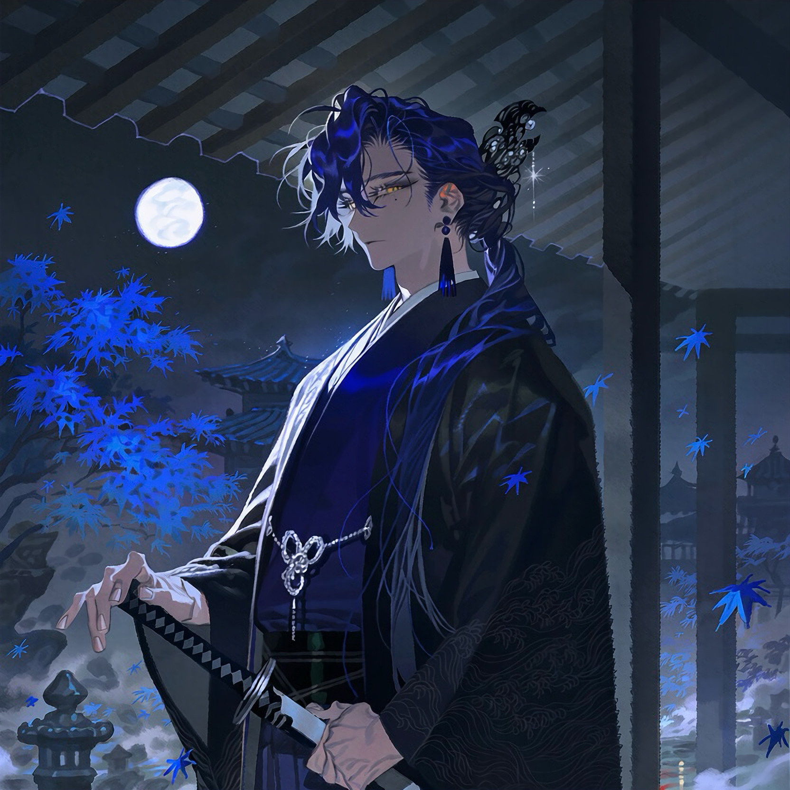

CHARACTER RECORD / 025STATUS: AVAILABLE

✦IMAGE
NOT FOUND
NOT FOUND
青藍
✦ WITH OUTFIT
服装込み
PROMPT DATATXT / 025
masterpiece, best quality, ultra detailed, intricate details, boy, adult male, Japanese man, traditional Japanese aesthetic,
1.5::midnight navy blue hair, long straight hair tied in a loose low ponytail, soft face-framing strands, silky hair, slightly messy bangs::, 1.4::pale golden eyes, narrow eyes, elegant eyelashes, subtle beauty mark beneath the left eye::, 1.5::slender yet toned male physique, broad shoulders, graceful posture, long fingers::,
1.6::deep navy blue kimono, black haori with intricate wave embroidery, layered traditional Japanese clothing, dark indigo hakama, wide sleeves, black obi belt, silver ornamental cord, subtle wave patterns woven into the fabric::, 1.4::ornate silver kanzashi, dark blue tassel earrings, black lacquered hairpin, traditional Japanese accessories::, 1.3::katana in a black and silver scabbard, hand resting on the sword hilt::,
1.5::calm aloof expression, mysterious gaze, quiet confidence, refined elegance, subtle intimidating aura::,